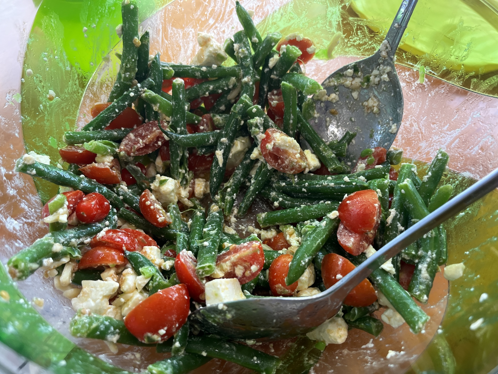

Bean Salad
 Meat
Meat

somegreen beanssomewater
Boil green beans in water for 2 mins.
somecherry tomatoes
Quarter cherry tomatoes.
somemarinated fetasomepine nuts
Add beans, tomatoes, marinated feta and pine nuts (optional) to salad bowl and mix.